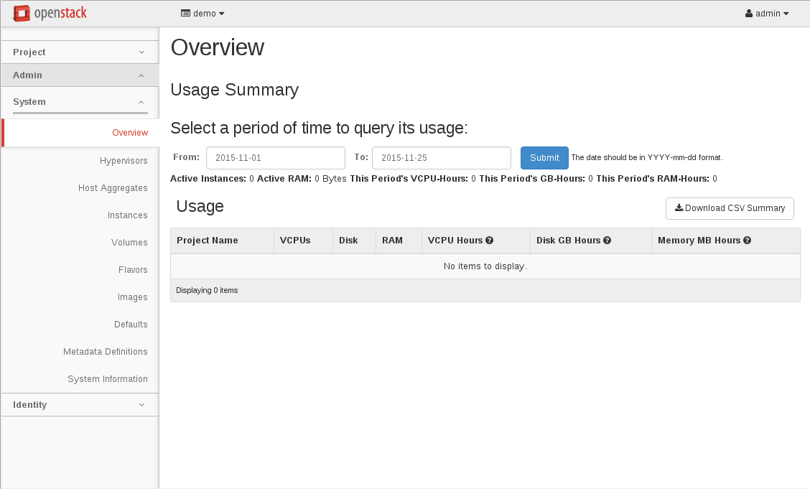
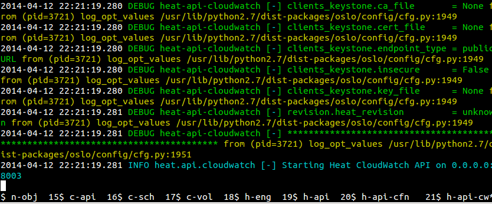

Demo environment

DevStack
- A bunch of scripts to build a full OpenStack environment
- Used as
- Demo environment
- Part of the OpenStack project's functional testing
- Single and multi node setup
- Installs services from source
- from git master by default
- from stable branches by configuration, e.g. stable/newton
- Documentation: http://docs.openstack.org/developer/devstack/

Service terminals
- Using Linux 'screen'
- Access the terminals the installed services are running in
- Use command 'screen -x' to see the running services
- For further commands see the
User's Manual

Exercise
- Ensure you have the DevStack repository cloned to the VM you would like to
use it